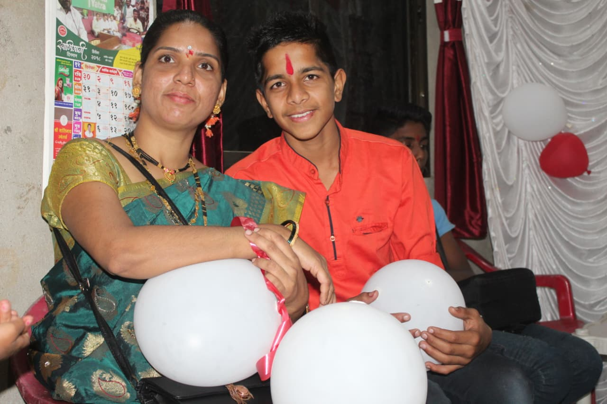

01Sister one
My forever
Chill Place
Pinky Tai, you are not just my sister, you are one of the most special people in my life. 😊 Your smiling face and chill mind always make everything feel better. You are the sister who takes care of Mom, always thinks about our family, and makes sure everyone is happy. And I can never forget how you bring me my favourite khari from Mumbai every time you come to Khandala. 🥹❤️ It may seem like a small thing, but for me, it means a lot because it shows how much you care about me. Thank you for always being there, for caring, for bringing happiness, and for being the amazing sister you are. Stay safe, keep smiling, and always be the same wonderful Pinky Tai. ❤️ My forever chill place — Pinky Tai. 🫶🏻
The best memories are never planned. They are just us, laughing until our cheeks hurt.